Abertura
I.S.O PRO — Gestão de materiais
Desktop e Campo · mesma operação com rasto
O que o sistema entrega: uma linha única de produto para cadastrar, movimentar e provar materiais na obra — com relatórios e qualidade integrados.
A seguir: ordem dos módulos do menu (como no software). Tema de trabalho recomendado nas demos: Neon (verde); no slide 27 há quatro capturas de tema numa grelha 2×2.
/login
Login e acesso
Entrada segura por perfil (Administrador, Planejamento, Operação, Consulta).
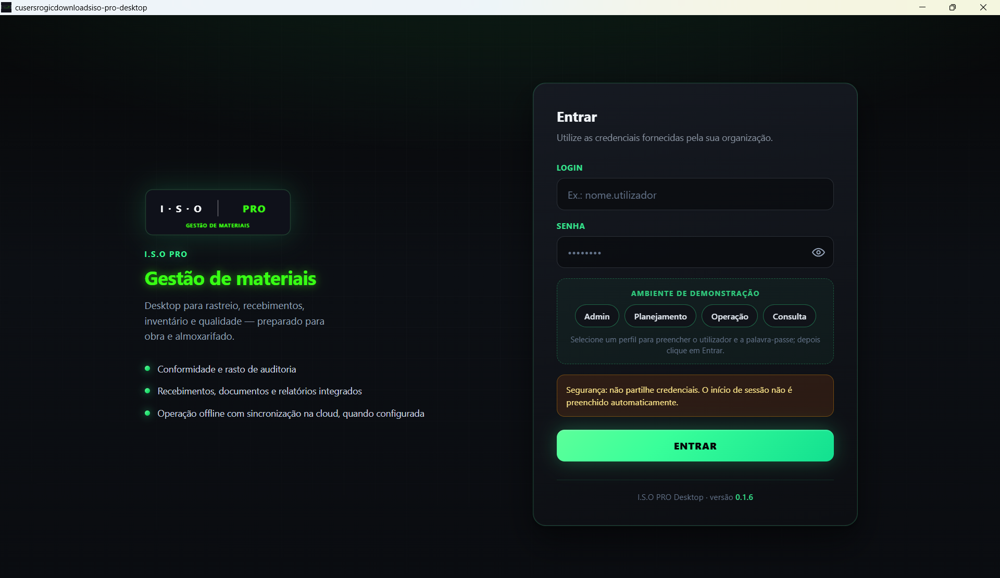
slide-02-login.pngO que o sistema entrega: acesso controlado ao desktop — sessões por utilizador, alinhado a permissões e à governança da equipa.
Execute remap-apresentacao-assets-ordem-menu.ps1 na pasta docs para gerar estes ficheiros a partir dos PNG antigos.
/dashboard
Painel
Visão geral da operação e indicadores locais / nuvem.
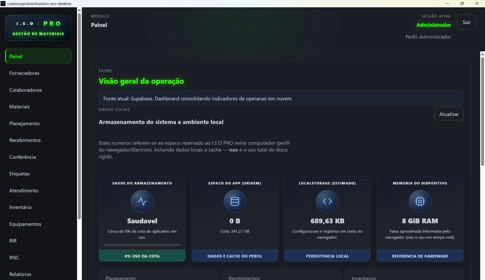
slide-03-painel.pngO que o sistema entrega: painel consolidado — saúde do armazenamento, ligação Supabase e leitura rápida do que está a acontecer na operação.
Topbar: «Painel».
/fornecedores
Fornecedores
Cadastro base para NF, recebimentos e qualidade.
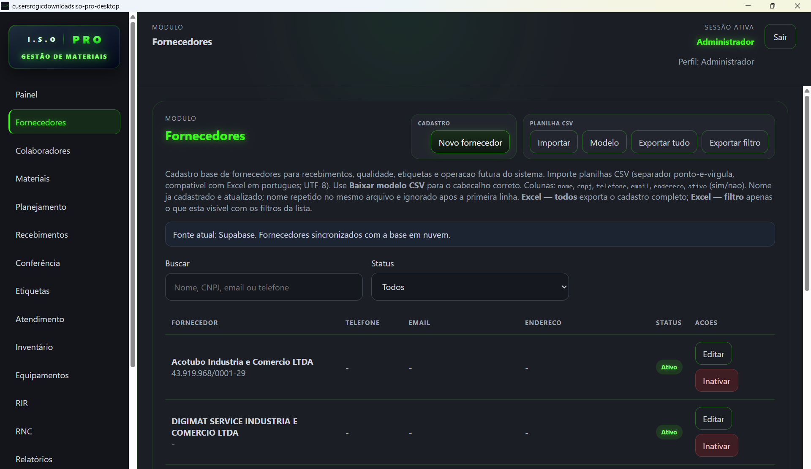
slide-04-fornecedores.pngO que o sistema entrega: fornecedores normalizados com importação/exportação CSV e sincronização quando a nuvem está ativa.
Sidebar: «Fornecedores».
/colaboradores
Colaboradores
Quem retira material e quem opera no sistema — rasto humano.
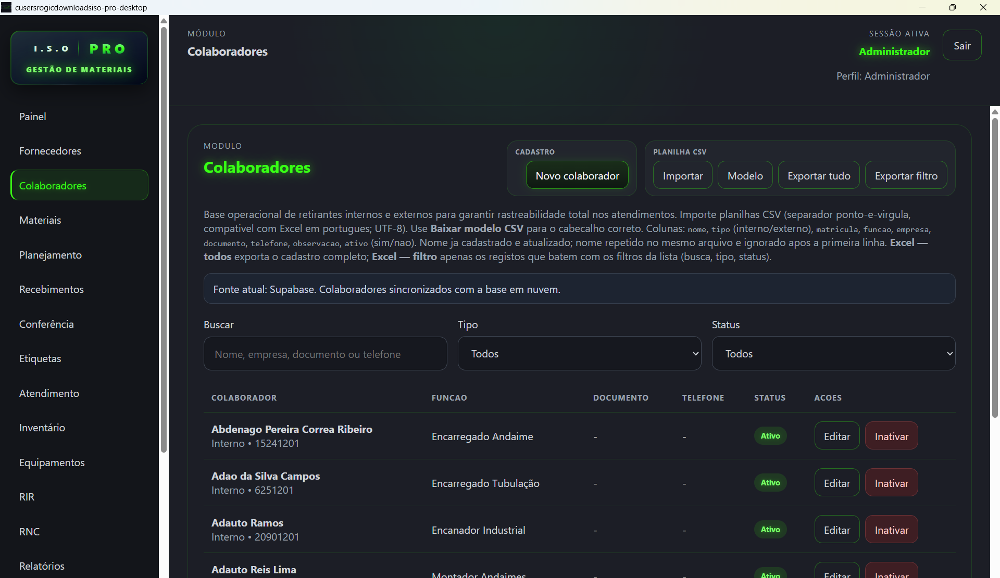
slide-05-colaboradores.pngO que o sistema entrega: cadastro de colaboradores internos/externos ligado a atendimento, inventário e relatórios.
Sidebar: «Colaboradores».
/materiais
Materiais (Cadastro de Materiais)
Catálogo, códigos de barras e disciplinas.
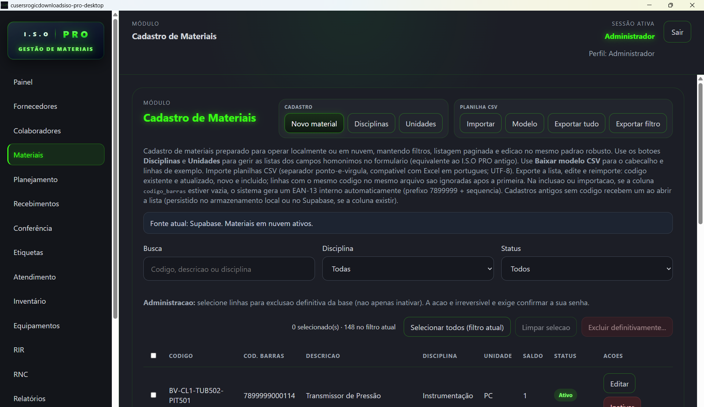
slide-06-materiais.png — use tema Neon na demo para consistência.O que o sistema entrega: material mestre com EAN-13 opcional, saldos e exportação — base para planejamento, etiquetas e atendimento.
Topbar: «Cadastro de Materiais».
/documentos
Planejamento de Materiais
Documentos de necessidade e linhas para execução.

slide-07-planejamento.pngO que o sistema entrega: planeamento por documento com estados (pendente, parcial, recebido, atendido) e rastreio até ao requerente.
Sidebar «Planejamento»; no mobile o separador equivalente chama-se «Documentos».
/recebimentos
Recebimentos
NF, romaneio e itens alinhados ao estoque.
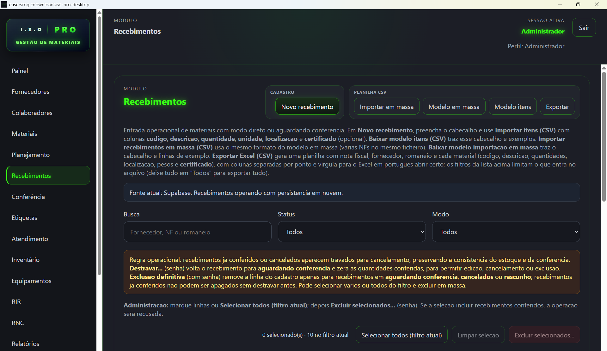
slide-08-recebimentos.pngO que o sistema entrega: entrada de material com travas, importação em massa e ligação à conferência e às etiquetas.
Sidebar: «Recebimentos».
/conferencia
Conferência
Validação de recebimentos antes de libertar stock.
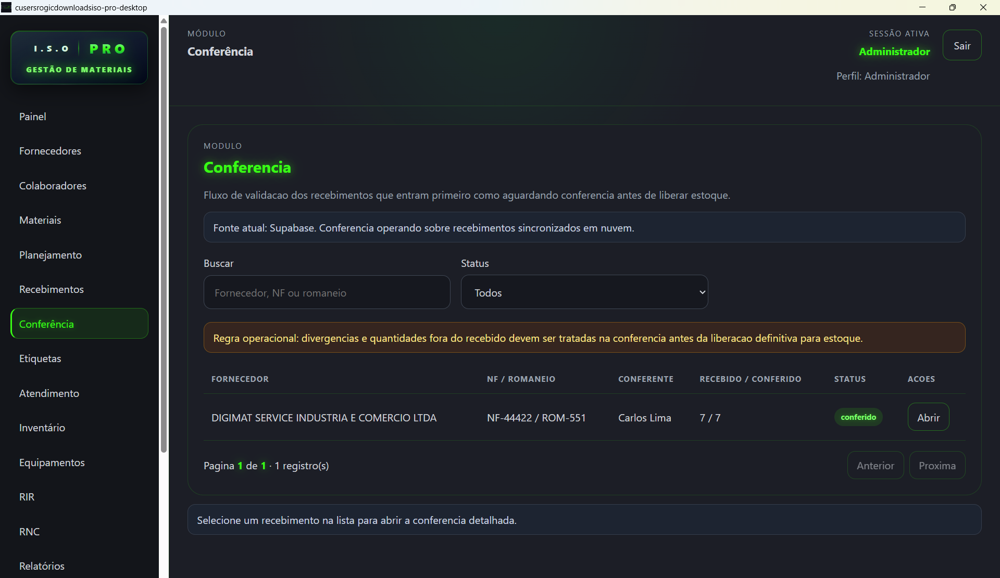
slide-09-conferencia.png — módulo Conferência (desktop).O que o sistema entrega: fluxo de conferência com divergências tratadas antes da liberação definitiva para o armazém.
No mobile existe o separador «Conferência» com o mesmo conceito operacional.
/etiquetas
Etiquetas
Impressão a partir de recebimentos e histórico.
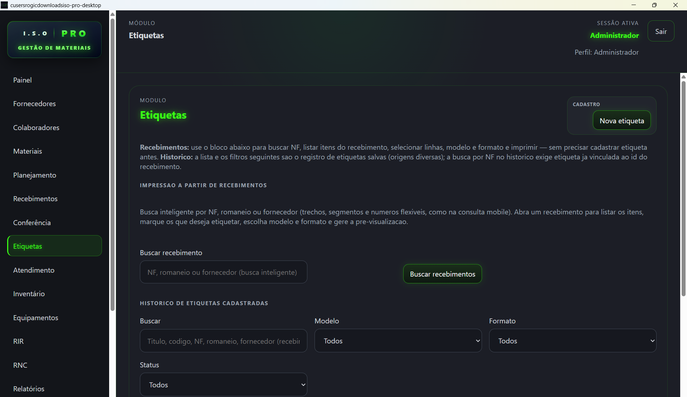
slide-10-etiquetas.pngslide-10-etiquetas-amostra.png (origem: etiqueta.png)O que o sistema entrega: etiquetas alinhadas ao recebimento — ligação física ao código que o mobile e o inventário leem.
Sidebar: «Etiquetas».
/atendimento
Atendimento — módulo
Ecrã principal; no slide seguinte: recibo de retirada.
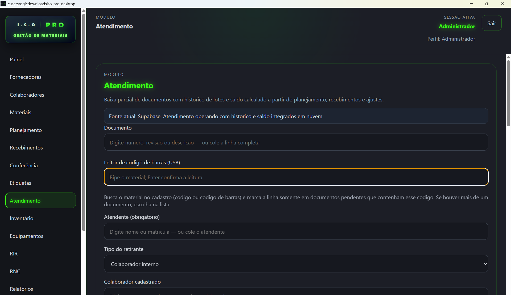
slide-11-atendimento.pngO que o sistema entrega: atendimento por documento com leitor USB e rasto na lista de lotes.
Próximo slide: recibo. Mobile: separador «Atendimento».
/atendimento · recibo
Atendimento — recibo
Comprovativo de retirada (impressão / PDF).
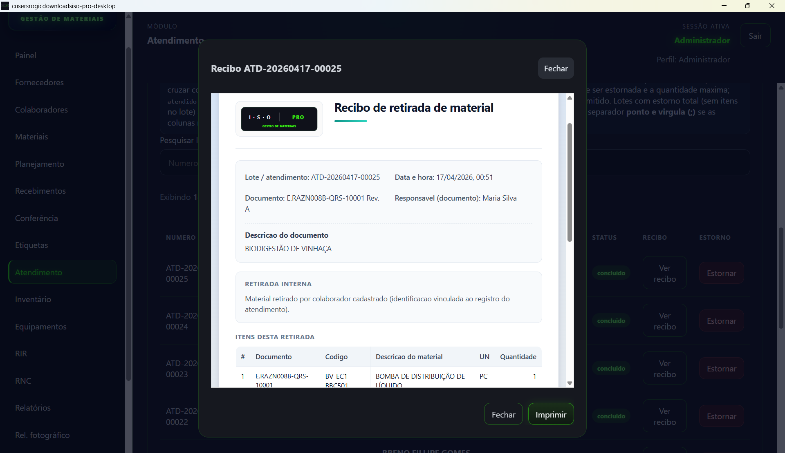
slide-11-recibo.png ou RECIBO ATENDIMENTO.pngO que o sistema entrega: recibo com itens, quantidades e identificação do lote — arquivo e auditoria.
Depois do recibo segue o módulo Inventário no menu.
/inventario
Inventário
Rotativo ou geral; integração com contagem mobile.
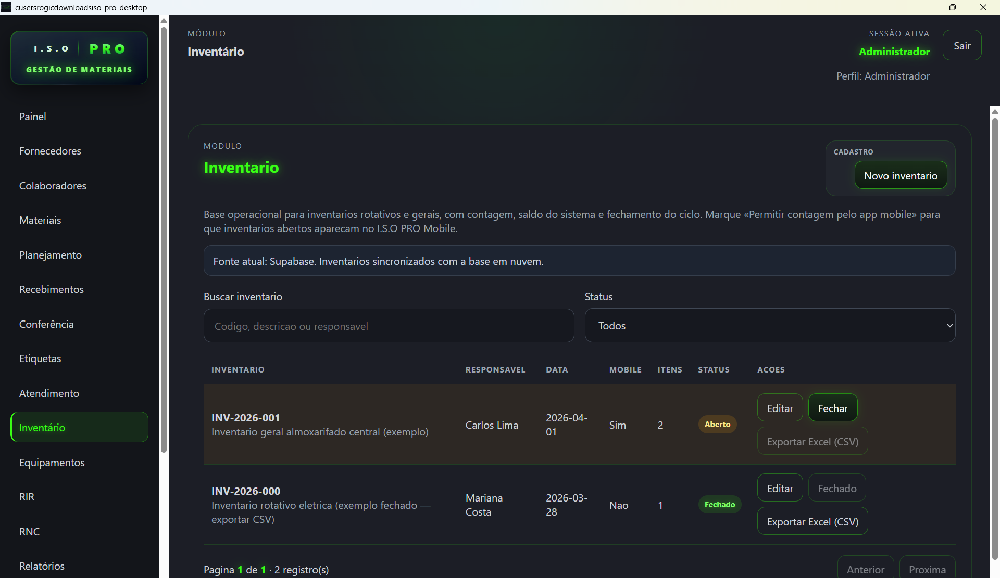
slide-12-inventario.pngO que o sistema entrega: inventários com estados, exportação e opção de contagem pelo I.S.O PRO Mobile.
Sidebar: «Inventário».
/equipamentos
Equipamentos
Registo de equipamentos ligados à operação.
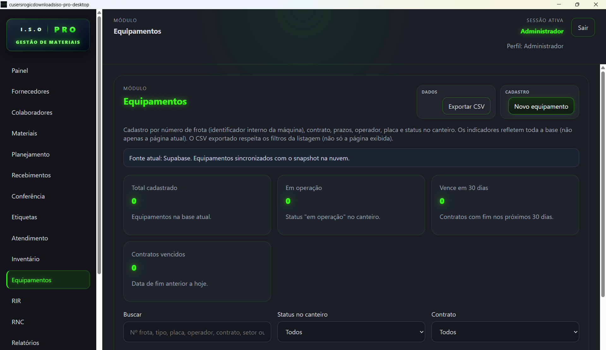
slide-13-equipamentos.pngO que o sistema entrega: módulo de equipamentos para apoio à obra e rasto patrimonial quando aplicável ao vosso processo.
Sidebar: «Equipamentos».
/rir
RIR — módulo (inspeção de recebimento)
Lista e registo no desktop; no slide seguinte: relatório de inspeção.
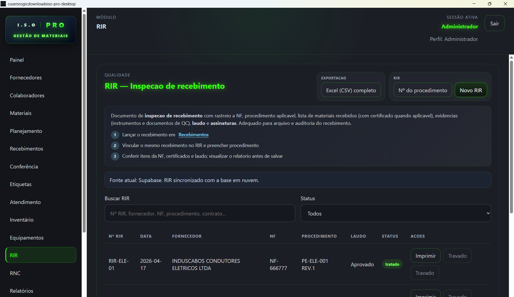
slide-14-rir.pngO que o sistema entrega: RIR com vínculo a NF, procedimentos e listas — preparação para o relatório.
Próximo slide: relatório RIR. Sidebar: «RIR».
/rir · relatório
RIR — relatório de inspeção de recebimento
Documento para arquivo / impressão.
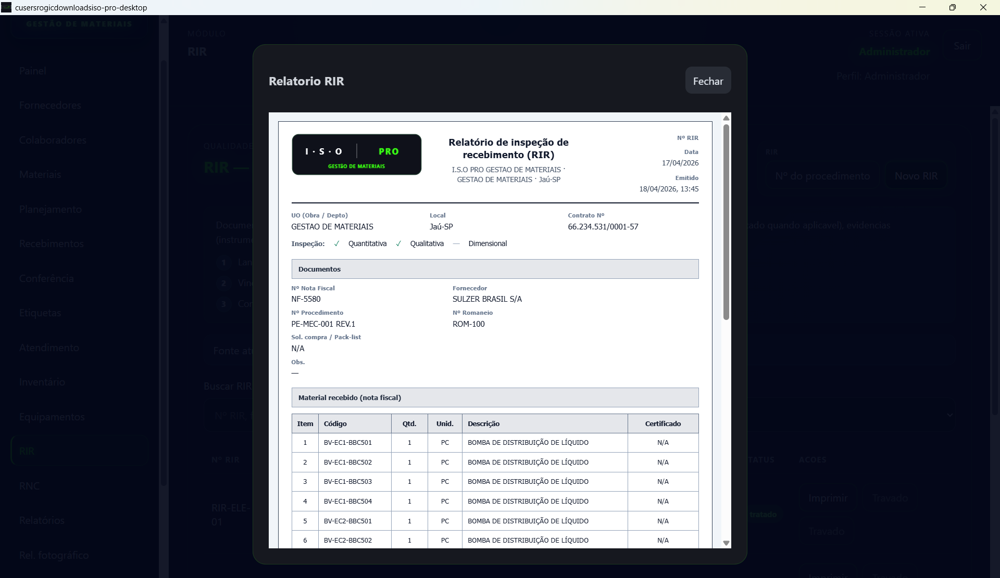
slide-14-relatorio-rir.png ou RIR.pngO que o sistema entrega: relatório RIR gerado no fluxo — impressão e auditoria.
Depois segue o módulo RNC no menu.
/rnc
RNC — módulo (não conformidade)
Registo no sistema; no slide seguinte: relatório RNC.
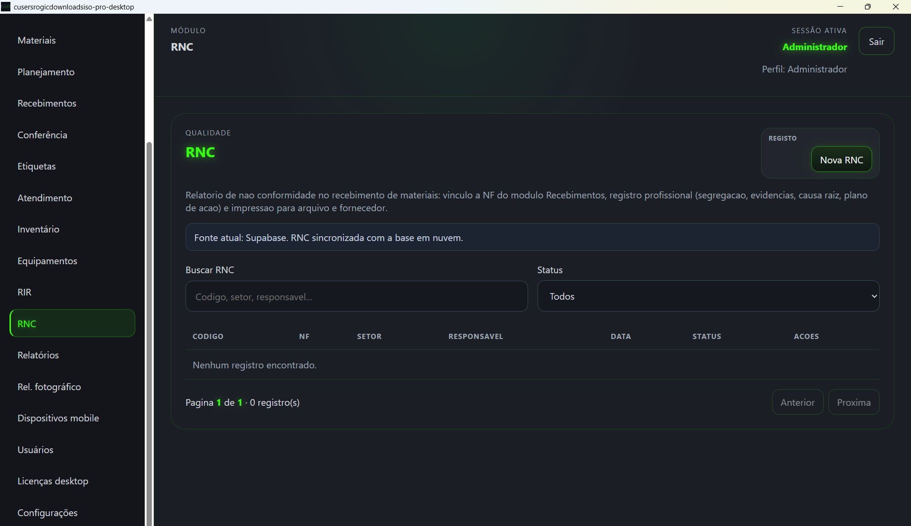
slide-15-rnc.pngO que o sistema entrega: RNC ligada à NF com segregação e evidências.
Próximo slide: relatório RNC.
/rnc · relatório
RNC — relatório
Documento de não conformidade (impressão / PDF).
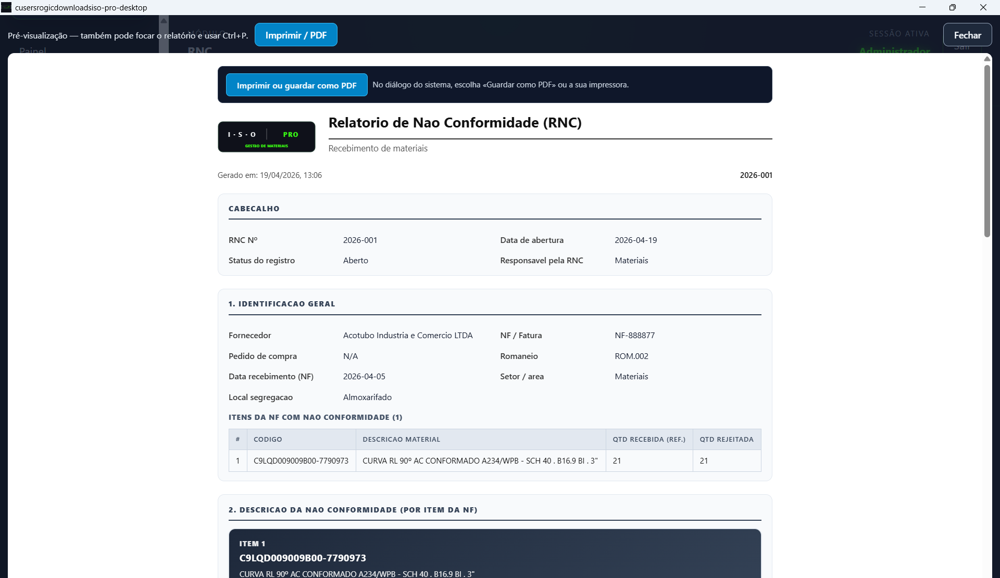
slide-15-relatorio-rnc.png ou RNC.pngO que o sistema entrega: relatório RNC para arquivo, fornecedor e auditoria.
Depois segue «Relatórios» no menu.
/relatorios
Relatórios
Indicadores e exportações gerenciais.
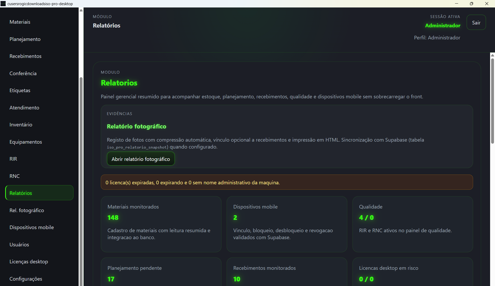
slide-16-relatorios.pngO que o sistema entrega: painel resumido (materiais, recebimentos, qualidade, mobile, licenças) sem sobrecarregar o operador.
Sidebar: «Relatórios».
/relatorio-fotografico
Relatório fotográfico — módulo
Ecrã do módulo; no slide seguinte: documento com fotos.
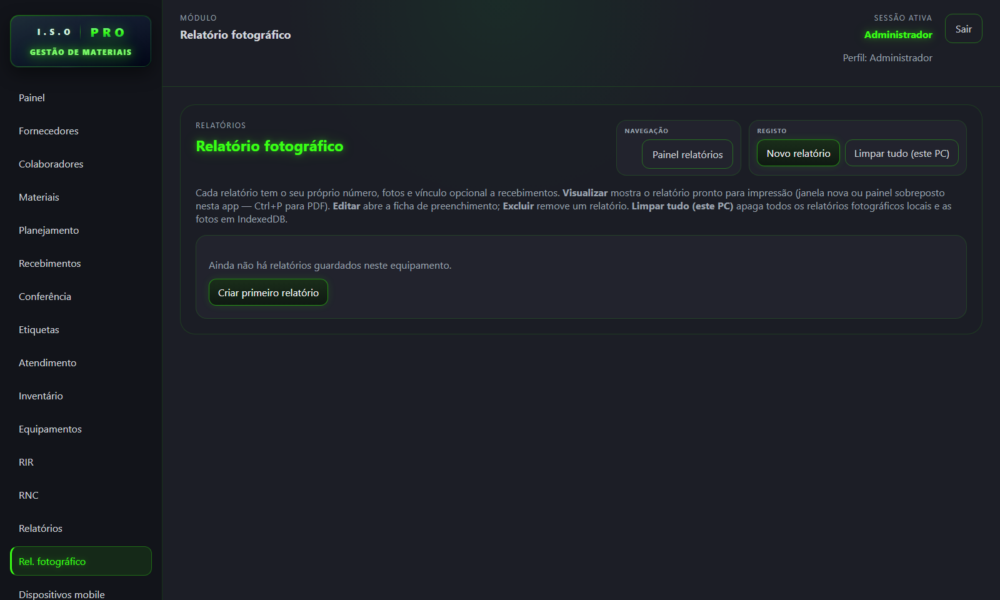
slide-20-modulo-rel-fotografico.png — rota #/relatorio-fotografico, «Rel. fotográfico» ativo na sidebar. Não usar slide-17-rel-fotografico.png (é o painel «Relatórios»). Alternativa: slide-13-rel-foto.png.O que o sistema entrega: arquivo por NF/romaneio com compressão e ligação a recebimentos.
Próximo slide: relatório fotográfico (documento). Sidebar: «Rel. fotográfico».
/relatorio-fotografico · documento
Relatório fotográfico — documento
Relatório com grelha de fotos (impressão / PDF).
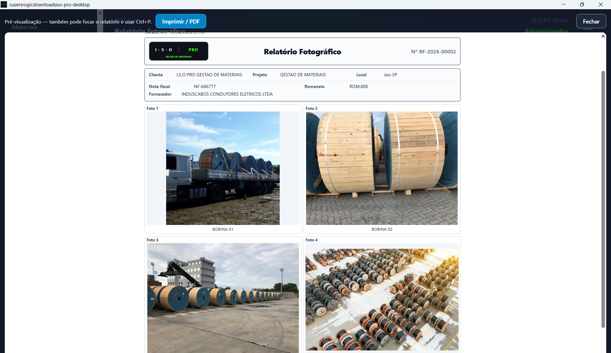
slide-17-relatorio-fotografico.png ou Relatório fotográfico.pngO que o sistema entrega: relatório HTML com fotos para arquivo e obra.
Depois segue «Dispositivos mobile» no menu.
/mobile
Dispositivos mobile — módulo
Desktop: painel de aparelhos vinculados, autorização, bloqueio e revogação.
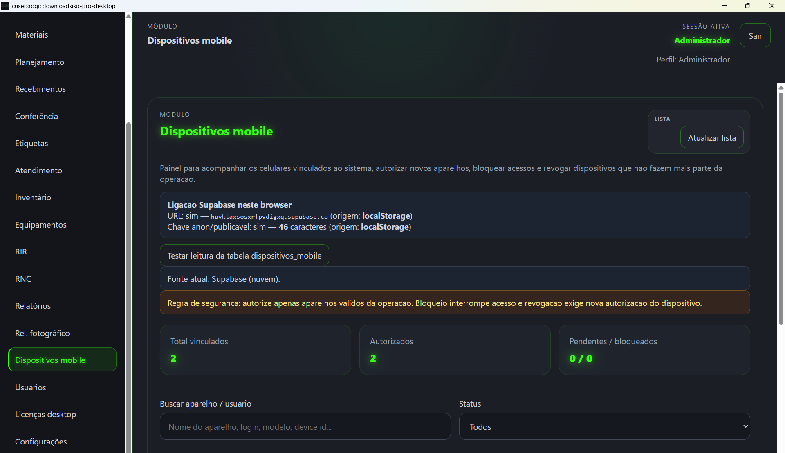
slide-22-modulo-dispositivos-mobile.png ou Dispositivo Mobile.png — sidebar «Dispositivos mobile» (não Planejamento).O que o sistema entrega: governo dos telemóveis que acedem ao snapshot — segurança e conformidade no acesso ao Campo.
Próximo slide: app no Campo (ex.: Documentos). Sem expor chaves ou URLs sensíveis em vídeo.
iso_pro_mobile
Dispositivos mobile — app no Campo
Telemóvel autorizado: mesmo snapshot — exemplo ecrã Documentos / operação.
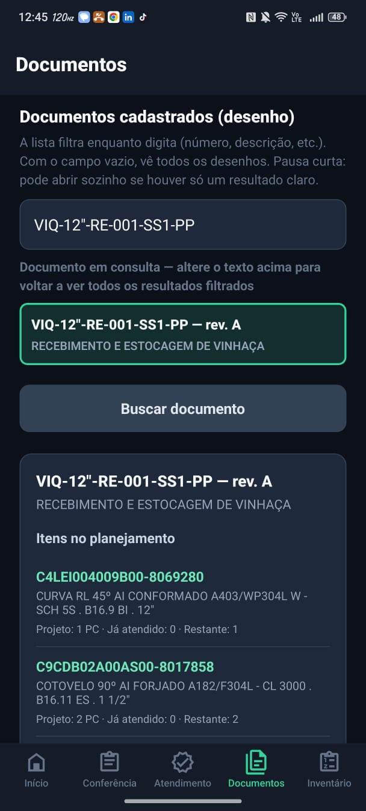
slide-23-app-dispositivos-campo.png (ou slide-15-mobile.png enquanto não exportar a nova captura).O que o sistema entrega: após autorização no desktop, o operador usa o app no Campo com o mesmo dado — conferência, atendimento, documentos, inventário.
Texto sugerido para legenda no editor de vídeo: ver apresentacao-iso-pro-roteiro-video.md.
/usuarios
Usuários e permissões
Perfis do desktop e estado ativo/inativo.
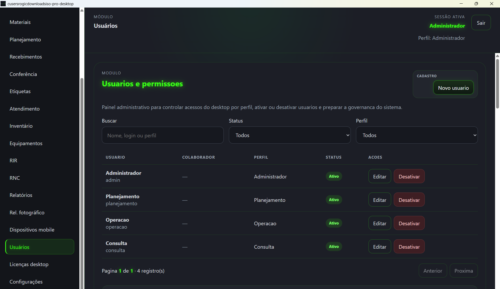
slide-19-usuarios.pngO que o sistema entrega: administração de contas e perfis — cada ação no desktop fica atribuível a um utilizador.
Sidebar: «Usuários».
/licencas-desktop
Licenças desktop
Controlo de licenciamento das instalações.
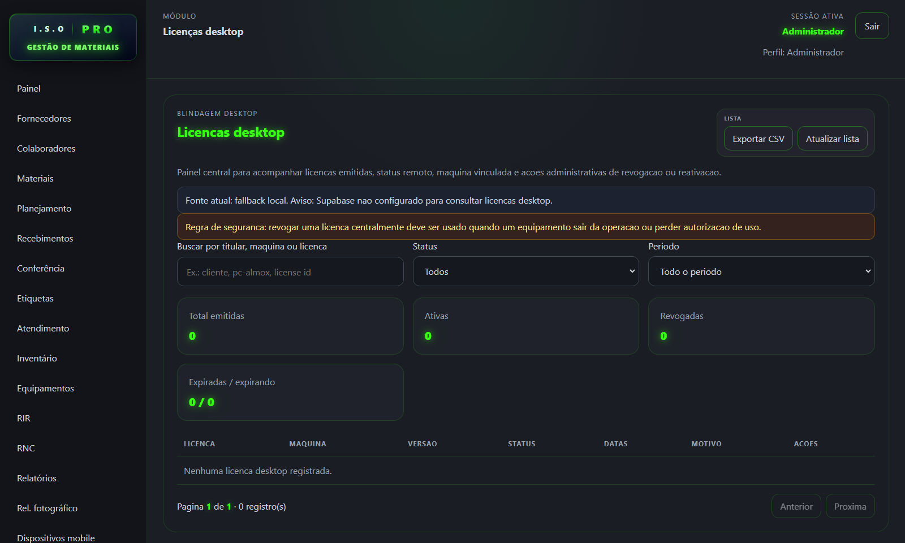
slide-25-licencas-desktop.png — ecrã «Licenças desktop» na sidebar. Não usar slide-11-desktop.png (é Atendimento) nem slide-15-desktop.png (Planejamento).O que o sistema entrega: visibilidade de licenças e risco (expiração, identificação da máquina) para a equipa de TI ou gestão.
Sidebar: «Licenças desktop».
/configuracoes
Configurações
Tema, numeração, cliente/projeto e integrações.
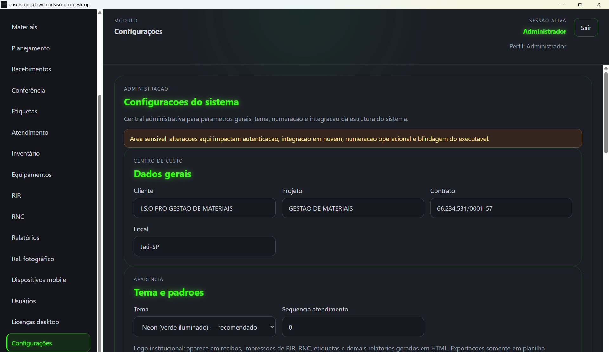
slide-21-configuracoes.png — sem chaves em evidência.O que o sistema entrega: central de parâmetros e aparência — incluindo o tema Neon recomendado para demos coerentes.
Sidebar: «Configurações».
Aparência · Configurações
Temas do sistema
Quatro capturas numa grelha 2×2: Neon, tema clássico (azul), Verde e Claro. Nas demos, use um só tema nos restantes slides.
Neon (recomendado)
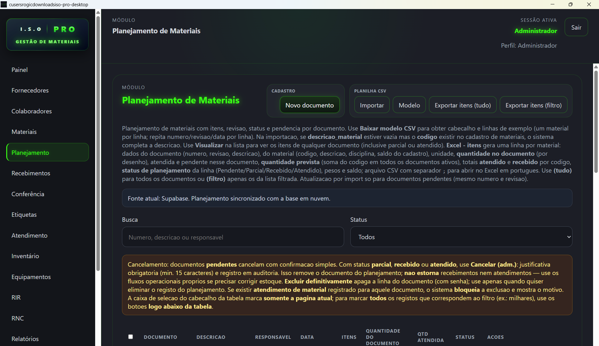
slide-22-tema-neon.pngTema clássico (azul)
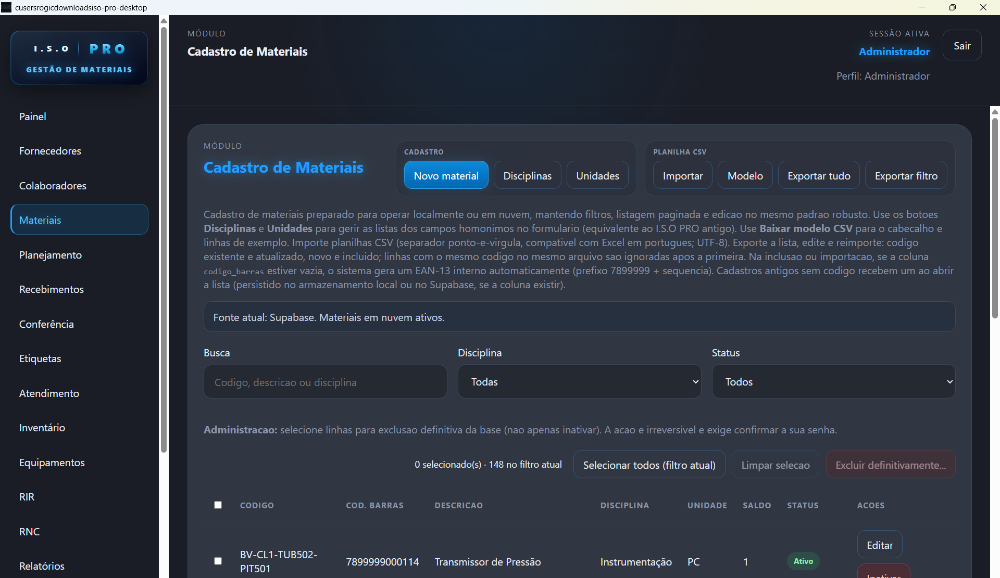
slide-22-tema-azul.pngTema Verde

TEMA VERDE.pngTema Claro

TEMA CLARO.pngO que o sistema entrega: em Configurações → Tema há vários modos (Neon, padrão escuro, escuro, claro, verde, etc.). Este slide junta quatro referências visuais: as duas primeiras já usadas no deck; a linha de baixo mostra as capturas TEMA VERDE e TEMA CLARO.
Assets: slide-22-tema-neon.png, slide-22-tema-azul.png, TEMA VERDE.png, TEMA CLARO.png em docs/apresentacao-assets/. Versão embutida: gerar-apresentacao-slides-embedded.ps1.
iso_pro_mobile
I.S.O PRO no Campo
Início · Conferência · Atendimento · Documentos · Inventário.
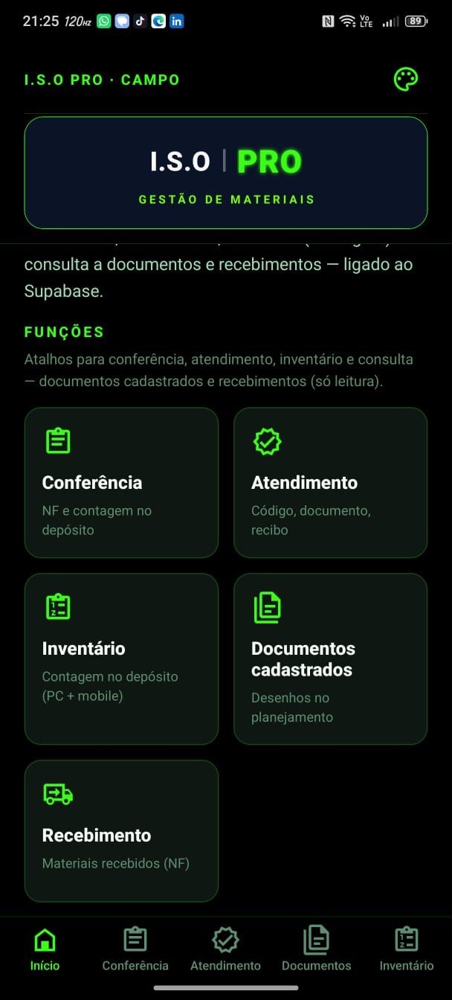
slide-23-mobile-campo.png — ecrã Início / Campo.O que o sistema entrega: o mesmo snapshot da operação no telemóvel — atalhos para conferência, atendimento, inventário e documentos no Campo.
Projeto: iso_pro_mobile. Último slide do deck — pode deixar ~2–3 s de silêncio no fim se exportar para vídeo.